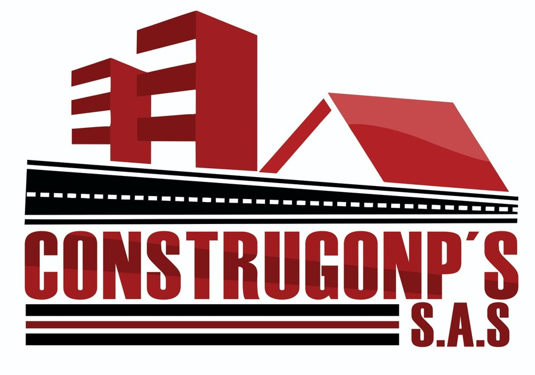

Construye prompts de nivel profesional
Un prompt bien hecho se levanta como un edificio: por pisos. Con el método RCT-FVR armas, en seis pasos, una instrucción clara, verificable y con límites para ChatGPT, Claude, Gemini o Copilot.

Cómo funciona este cuaderno
Todo se guarda en tu propio navegador. No se envía ningún dato a ningún servidor.
1 · Entiende los 6 pisos
Rol, Contexto, Tarea, Formato, Validación y Restricciones. Cada piso responde una pregunta.
2 · Levanta tu prompt
Responde las seis preguntas y el cuaderno ensambla la instrucción completa, lista para copiar.
3 · Revisa la obra
La IA propone, tú decides. Usa la lista de validación antes de confiar en una cifra.
Copiloto, no piloto
La IA acelera el trabajo; el criterio profesional sigue siendo humano.
Verifica antes de actuar
Concilia cifras, fórmulas y normas contra tus soportes y la ley vigente.
Cuida tus datos
No pegues NIT de clientes, contraseñas ni información bancaria real en una IA pública.
Prompt básico frente a profesional
La calidad de la instrucción orienta la calidad de la respuesta. El mismo pedido, escrito de dos maneras.
BÁSICOLo que casi todos escriben
Respuesta genérica: la IA no sabe tu sector, qué comparar, cómo presentarlo ni qué no debe inventar.
PROFESIONALCon el método RCT-FVR
Respuesta enfocada, con fórmulas visibles y alertas cuando algo no concilia.
RCT-FVR: seis pisos, seis preguntas
Método didáctico para construir instrucciones profesionales para la inteligencia artificial. Responde cada pregunta y tu prompt queda completo.
Levanta tu prompt
Escribe en cada recuadro o carga un ejemplo para ver cómo se llena. A la derecha crece tu edificio: cada piso completo lo ilumina.
Prompts financieros listos para usar
Ocho instrucciones ya armadas con el método. Cambia los datos por los de tu empresa. Cópialas tal cual o edítalas en el constructor.
¿Podemos confiar ciegamente en la IA?
No. Una cifra puede parecer correcta y no serlo. Antes de usar un resultado en una decisión, recórrelo con esta lista.
Llévate tu trabajo
Descarga tu prompt y tu lista de validación, o imprímelos.
El contador del pasado registraba lo que sucedía, el del presente interpreta lo que sucede y el del futuro usará la tecnología para anticiparse. La IA es la herramienta; el criterio y la ética siguen siendo humanos.